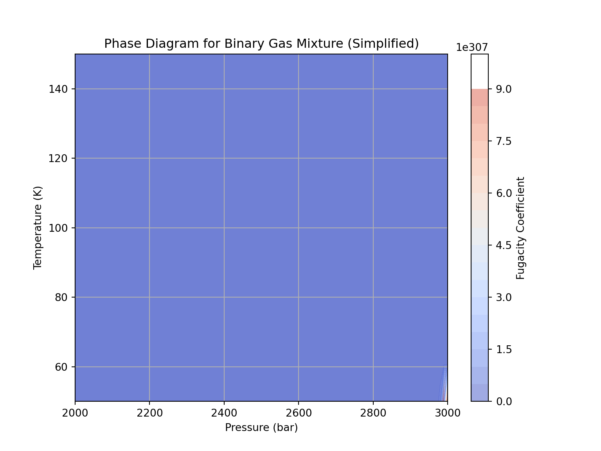

7 Properties of Gas
In this chapter, we will dive into the essential properties of gases and their relevance in reservoir engineering. A solid understanding of gas properties is crucial for analyzing, modeling, and managing gas reservoirs efficiently. From the behavior of gases under varying pressure and temperature conditions to phase transitions and compositional analysis, this chapter will equip you with the knowledge needed to work with gas reservoirs effectively.
7.1 Gas Behavior
Understanding the behavior of gases is foundational to reservoir engineering, particularly when dealing with gas reservoirs. At the heart of this understanding lies the Ideal Gas Law, which describes how gases respond to changes in pressure and temperature. We will explore the ideal gas law, its mathematical formulation, and how it simplifies gas behavior analysis. However, real gases deviate from ideal behavior under certain conditions, such as high pressures and low temperatures. In this chapter, we will also delve into real gas behavior, examining the factors responsible for these deviations and their implications for gas reservoir simulations. This chapter delves into the intricacies of natural gas systems as relevant to gas reservoir engineering, focusing primarily on the behavior and properties concerning pressure, volume, and temperature (PVT). Given that gas extracted from subsurface reservoirs undergoes significant pressure and temperature changes before reaching the sales gas line, understanding its PVT behavior and associated properties is crucial.
The PVT behavior of natural gas is contingent upon its chemical composition, which can vary considerably from one reservoir to another, leading to diverse production behaviors. Hence, we commence with a concise exploration of natural gas’s chemical makeup. The fluctuating pressures and temperatures inherent in gas production processes can induce complex phase behavior phenomena within natural gas systems. Thus, we provide a qualitative examination of hydrocarbon system phase behavior here.
Beyond elucidating general PVT behavior, we also explore methods and techniques for predicting pertinent gas properties essential for reservoir engineering analyses and assessments. While predominantly empirical, these methods have been refined to such an extent that they often serve as viable substitutes for laboratory measurements. Indeed, in many instances, knowledge of the composition alone is adequate for evaluating gas properties.
7.1.1 Ideal Gas Law
The Ideal Gas Law, represented by the equation PV = nRT, stands as a fundamental pillar of gas behavior in reservoir engineering. In this equation, P represents pressure, V is volume, n stands for the number of moles of gas, R denotes the gas constant, and T signifies temperature. This simple yet powerful law states that for an ideal gas, the product of pressure and volume is directly proportional to the number of moles and the absolute temperature. Python can be a valuable tool for reservoir engineers to apply this law in real-world scenarios. Let’s use Python to calculate the volume of a given amount of gas at a specific temperature and pressure:
# Constants
R = 8.314 # Gas constant in J/(mol*K)
P = 10.0 # Pressure in atmospheres (atm)
n = 2.0 # Moles of gas
T = 298.15 # Temperature in Kelvin (K)
# Calculate volume using the Ideal Gas Law
V = (n * R * T) / P
print(f"Volume of the gas: {V} liters")In this Python code snippet, we use the Ideal Gas Law to determine the volume of a gas sample based on known values of pressure (P), moles (n), gas constant (R), and temperature (T). Understanding and applying this law is essential for reservoir engineers when dealing with gas reservoirs, as it allows them to make critical predictions about gas behavior and reservoir performance.
7.1.2 Real Gas Behavior
While the Ideal Gas Law provides a simplified model for gas behavior, real gases exhibit deviations from ideal behavior under specific conditions, typically at high pressures and low temperatures. These deviations occur due to intermolecular forces and the finite size of gas molecules, which are not accounted for in the ideal gas model. The Van der Waals equation is commonly used to describe the behavior of real gases more accurately. In the Van der Waals equation, the pressure (P) and volume (V) of a gas are adjusted by correction terms to account for molecular interactions and finite molecular size. This equation takes the form:
The Van der Waals equation describes the behavior of real gases and incorporates corrections to account for molecular interactions and finite molecular size. It takes the form:
\[ (P + a \frac{n^2}{V^2})(V - nb) = nRT \]
Where:
- \(P\) is the pressure of the gas.
- \(V\) is the volume of the gas.
- \(n\) is the number of moles of the gas.
- \(R\) is the gas constant.
- \(T\) is the absolute temperature of the gas.
- \(a\) and \(b\) are Van der Waals constants specific to each gas.
This equation provides a more accurate representation of gas behavior, particularly at high pressures and low temperatures, compared to the ideal gas law. Reservoir engineers use the Van der Waals equation when dealing with gases that exhibit significant deviations from ideal behavior, ensuring more precise predictions in gas reservoir simulations.
Python code to calculate the behavior of real gases using the Van der Waals equation is given below. Let’s calculate the corrected pressure and volume for a real gas sample:
# Constants for a hypothetical gas (values for illustration)
a = 0.0321 # Van der Waals constant 'a' in (L^2*atm)/(mol^2)
b = 0.0237 # Van der Waals constant 'b' in L/mol
# Given values
P = 15.0 # Pressure in atmospheres (atm)
n = 2.0 # Moles of gas
T = 273.15 # Temperature in Kelvin (K)
# Calculate corrected pressure and volume using the Van der Waals equation
corrected_P = (n * R * T) / (n - n * b) - a * (n**2 / ((n - n * b)**2))
corrected_V = (n * R * T) / (corrected_P)
print(f"Corrected Pressure: {corrected_P} atm")
print(f"Corrected Volume: {corrected_V} liters")7.2 Gas Composition
Natural gas primarily consists of volatile paraffins, mainly methane, along with non-hydrocarbon gases like nitrogen, carbon dioxide, and hydrogen sulfide. Traces of helium, argon, and neon may also be present. Water vapor saturates natural gas due to its presence in hydrocarbon-bearing formations. Typically, natural gas composition is expressed in mole fractions or percentages, serving as a proxy for volume fractions. Hydrocarbon components up to heptanes are individually listed, while heavier hydrocarbons are grouped in the heptanes plus fraction. This standard representation suffices for reservoir engineering purposes.
7.3 Phase Behavior
Gas reservoirs often contain multiple components, leading to complex phase behavior. Understanding how these components behave under different pressure and temperature conditions is essential for accurately predicting gas reservoir performance. Two key aspects of phase behavior in gas reservoir engineering are phase diagrams and critical points.
7.3.1 Phase Diagrams
Phase diagrams provide valuable insights into how gas components behave under varying conditions. These diagrams typically display pressure-temperature (P-T) relationships and help visualize the regions where gases exist in different phases, such as gas, liquid, or solid. These diagrams are essential in understanding how a substance behaves under different conditions, especially in thermodynamics and materials science.
Phase Diagram for mixture of gases
a phase diagram for a mixture of gases can be significantly more complex than for a single-component system like water vapor. Phase diagrams for gas mixtures involve multiple components and typically require the use of phase equilibrium calculations based on thermodynamic models. The phase behavior of gas mixtures depends on factors such as composition, temperature, and pressure.
A common approach to create phase diagrams for gas mixtures is to use phase equilibrium software or simulation tools specifically designed for this purpose. These tools employ equations of state (EOS), such as the Peng-Robinson or Soave-Redlich-Kwong EOS, to model the phase behavior of gas mixtures.
Here is a simplified representation of the phase diagram for a binary gas mixture (e.g., methane and ethane) using the Peng-Robinson EOS. Note that this is just a basic illustration and does not provide actual phase equilibrium calculations:
import numpy as np
import matplotlib.pyplot as plt
# Constants for the Peng-Robinson EOS parameters (for illustration purposes)
a_mix = 0.85 # Attraction parameter for the mixture
b_mix = 0.05 # Co-volume parameter for the mixture
Tc_methane = 190.6 # Critical temperature for methane (K)
Tc_ethane = 305.3 # Critical temperature for ethane (K)
Pc_methane = 45.99 # Critical pressure for methane (bar)
Pc_ethane = 48.72 # Critical pressure for ethane (bar)
R = 0.083144598 # Universal Gas Constant
# Define temperature and pressure ranges
T_range = np.linspace(50, 150, 10) # Temperature range (K)
P_range = np.linspace(2000, 3000, 100) # Pressure range (bar)
# Create a grid of pressure and temperature values
P, T = np.meshgrid(P_range, T_range)
# Calculate fugacity coefficients for methane and ethane (for illustration)
# Note: Actual calculations would involve solving phase equilibrium equations
fugacity_methane = np.exp((P - Pc_methane) / (R * T) - b_mix / (R * T) * (P / Pc_methane))
<string>:4: RuntimeWarning: overflow encountered in exp
fugacity_ethane = np.exp((P - Pc_ethane) / (R * T) - b_mix / (R * T) * (P / Pc_ethane))
# Create the phase diagram plot
plt.figure(figsize=(8, 6))
<Figure size 800x600 with 0 Axes>
plt.contourf(P, T, fugacity_methane, levels=20, cmap='coolwarm', alpha=0.5)
<matplotlib.contour.QuadContourSet object at 0x10d7fb130>
plt.contourf(P, T, fugacity_ethane, levels=20, cmap='coolwarm', alpha=0.5)
/Users/anitakumari/azad/coding/Python/venv/lib/python3.9/site-packages/matplotlib/contour.py:1222: RuntimeWarning: overflow encountered in add
self.layers = 0.5 * (self._levels[:-1] + self._levels[1:])
<matplotlib.contour.QuadContourSet object at 0x10d8c0cd0>
plt.colorbar(label='Fugacity Coefficient')
<matplotlib.colorbar.Colorbar object at 0x10d8e3310>
plt.xlabel('Pressure (bar)')
Text(0.5, 0, 'Pressure (bar)')
plt.ylabel('Temperature (K)')
Text(0, 0.5, 'Temperature (K)')
plt.title('Phase Diagram for Binary Gas Mixture (Simplified)')
Text(0.5, 1.0, 'Phase Diagram for Binary Gas Mixture (Simplified)')
plt.xlim(2000, 3000)
(2000.0, 3000.0)
plt.ylim(50, 150)
(50.0, 150.0)
plt.grid(True)
plt.show()
Phase diagrams are crucial tools for reservoir engineers as they enable the prediction of phase transitions and phase equilibria within the reservoir.
In a phase diagram, the critical point stands out as a critical temperature (Tc) and critical pressure (Pc) where a phase transition occurs. The phase diagram allows engineers to assess how far the actual reservoir conditions are from the critical point, influencing decisions regarding production strategies and well operations.
7.3.1.1 Critical Point and Phase Transitions
The critical point (also known as the critical state) is a specific condition at which a substance undergoes a phase transition. At the critical point, the distinction between the liquid and gas phases disappears, and the substance becomes a supercritical fluid. This transition has significant implications for reservoir engineers because it affects how gases behave at extreme reservoir conditions.
The critical point is characterized by the critical temperature (Tc) and critical pressure (Pc), which are unique to each gas component. These critical properties vary depending on the type of gas present in the reservoir. Understanding the critical point and its proximity to reservoir conditions is essential for predicting phase transitions and ensuring accurate reservoir simulations.
7.3.1.2 different correlation to calculate critical temperature (Tc) and critical pressure (Pc)
Here are five different correlations along with Python code chunks to calculate critical temperature (Tc) and critical pressure (Pc). Each correlation provides an estimation of these critical properties based on different parameters. Please note that these correlations provide approximate values and may have varying degrees of accuracy depending on the specific gas mixture and conditions.
7.3.1.2.1 Lee-Kesler Equation
The Lee-Kesler equation is a common method to estimate critical temperature (Tc) and critical pressure (Pc) for pure gases. This equation requires knowledge of the acentric factor (ω) and the gas’s reduced temperature (Tr).
The Lee-Kesler equation for critical temperature (Tc) is:
\[ Tc = Tc_r \cdot Tc_{RK} \]
And for critical pressure (Pc):
\[ Pc = Pc_r \cdot Pc_{RK} \]
Where \(Tc_r\) and \(Pc_r\) are the critical properties from the Redlich-Kwong equation of state, and \(Tc_{RK}\) and \(Pc_{RK}\) are constants derived from the acentric factor (ω).
Here’s Python code to calculate Tc and Pc using the Lee-Kesler equation:
# Constants for Lee-Kesler equation
Tc_rk = 190.56 # Critical temperature from Redlich-Kwong (RK) EOS
Pc_rk = 45.99 # Critical pressure from Redlich-Kwong (RK) EOS
omega = 0.011 # Acentric factor
# Calculate Tc and Pc using Lee-Kesler equation
Tc = Tc_rk * (1 + omega) # Critical temperature
Pc = Pc_rk / (1 + omega) # Critical pressure
print(f"Estimated Critical Temperature (Tc): {Tc} K")
print(f"Estimated Critical Pressure (Pc): {Pc} atm")7.3.1.3 Beattie-Bridgeman Equation
The Beattie-Bridgeman equation provides an estimation of critical temperature (Tc) and critical pressure (Pc) for pure gases based on the triple point temperature (Tt) and the gas’s molecular weight (M).
The Beattie-Bridgeman equation for critical temperature (Tc) is:
\[ Tc = 3.2 \cdot Tt + 11.5 \cdot M \]
And for critical pressure (Pc):
\[ Pc = 42.5 \cdot \frac{M^2}{Vc} \]
Where \(Vc\) is the critical volume, which can be estimated as \(Vc = 10 \cdot M\).
Here’s Python code to calculate Tc and Pc using the Beattie-Bridgeman equation:
# Constants for Beattie-Bridgeman equation
Tt = 273.16 # Triple point temperature in K
M = 28.97 # Molecular weight of nitrogen (for example)
# Calculate critical volume (Vc)
Vc = 10 * M
# Calculate Tc and Pc using Beattie-Bridgeman equation
Tc = 3.2 * Tt + 11.5 * M # Critical temperature
Pc = 42.5 * (M ** 2) / Vc # Critical pressure
print(f"Estimated Critical Temperature (Tc): {Tc} K")
print(f"Estimated Critical Pressure (Pc): {Pc} atm")This code estimates Tc and Pc using the Beattie-Bridgeman equation based on the provided triple point temperature (Tt) and molecular weight (M).
7.3.1.4 Riedel Equation
The Riedel equation offers an estimation of critical temperature (Tc) and critical pressure (Pc) for pure gases using the gas’s boiling point (Tb) and the critical temperature of methane (Tc_CH4).
The Riedel equation for critical temperature (Tc) is:
\[ Tc = Tc_{CH4} + 27.9 \cdot (Tb - Tc_{CH4}) \]
And for critical pressure (Pc):
\[ Pc = 10.6 \cdot \left(1 - \frac{Tc}{Tb}\right) \]
Where \(Tc_{CH4}\) is the critical temperature of methane (Tc_CH4 = 190.6 K).
Here’s Python code to calculate Tc and Pc using the Riedel equation:
# Constants for Riedel equation
Tb = 77.36 # Boiling point of nitrogen (for example) in K
Tc_CH4 = 190.6 # Critical temperature of methane in K
# Calculate Tc and Pc using Riedel equation
Tc = Tc_CH4 + 27.9 * (Tb - Tc_CH4) # Critical temperature
Pc = 10.6 * (1 - Tc / Tb) # Critical pressure
print(f"Estimated Critical Temperature (Tc): {Tc} K")
print(f"Estimated Critical Pressure (Pc): {Pc} atm")7.3.1.5 Yaws’ Equation
Yaws’ equation offers a straightforward approach to estimate critical temperature (Tc) and critical pressure (Pc) for hydrocarbon gases using the gas’s molecular weight (M) and the number of carbon atoms (C).
The Yaws’ equation for critical temperature (Tc) is:
\[ Tc = 169 + 0.684 \cdot M + 0.0007 \cdot M^2 \]
And for critical pressure (Pc):
\[ Pc = 708 - 3.6 \cdot C \]
Here’s Python code to calculate Tc and Pc using Yaws’ equation:
# Constants for Yaws' equation
M = 16.04 # Molecular weight of methane (for example)
C = 1 # Number of carbon atoms in methane
# Calculate Tc and Pc using Yaws' equation
Tc = 169 + 0.684 * M + 0.0007 * M**2 # Critical temperature
Pc = 708 - 3.6 * C # Critical pressure
print(f"Estimated Critical Temperature (Tc): {Tc} K")
print(f"Estimated Critical Pressure (Pc): {Pc} atm")7.3.1.6 Pitzer Equation
The Pitzer equation provides an estimation of critical temperature (Tc) and critical pressure (Pc) for gases using the critical temperature of methane (Tc_CH4) and the molecular weight (M).
The Pitzer equation for critical temperature (Tc) is:
\[ Tc = Tc_{CH4} \cdot \left(1 + \frac{1}{4} \cdot (1 - \sqrt{M})\right) \]
And for critical pressure (Pc):
\[ Pc = 67 \cdot \left(1 - \sqrt{M}\right)^3 \]
Here’s Python code to calculate Tc and Pc using the Pitzer equation:
# Constants for Pitzer equation
Tc_CH4 = 190.6 # Critical temperature of methane in K
M = 28.97 # Molecular weight of nitrogen (for example)
# Calculate Tc and Pc using Pitzer equation
Tc = Tc_CH4 * (1 + 1/4 * (1 - M**0.5)) # Critical temperature
Pc = 67 * (1 - M**0.5)**3 # Critical pressure
print(f"Estimated Critical Temperature (Tc): {Tc} K")
print(f"Estimated Critical Pressure (Pc): {Pc} atm")7.4 Review of Gas Properties
7.4.1 Real Gas law
There are no gas that behaves as Ideal gas. The volume of Real gas is more that Ideal gas. The number that measure the amount of gas deviates from perfect gas is actually a ratio. this ratio is called as compressibility factor or gas deviation factor. this is a dimensionless quantity.
If the gas deviation factor is not measured it can be estimated from the specific gravity of the gas. Sutton developed a correlation that estimates
\[\begin{equation} \tag{7.1} Ppc = 756.8 -131*Sg - 3.6 * Sg^2 \\ Tpc = 169.2 -349.5*Sg - 74 * Sg^2 \end{equation}\]
We will write a small code to plot this correlation.
import numpy as np
import matplotlib.pyplot as plt
Sg = np.arange(0.57,1.68,0.05)
Ppc = [756.8 -131*sg - 3.6 * sg*sg for sg in Sg]
Tpc = [169.2 + 349.5*sg - 74 * sg*sg for sg in Sg]
plt.plot(Sg, Ppc, 'r-')
[<matplotlib.lines.Line2D object at 0x10db43190>]
plt.plot(Sg, Tpc, 'b-')
[<matplotlib.lines.Line2D object at 0x10db43a30>]
plt.grid()
plt.ylabel('Pseudo-critical Pressure and Temperature (psia and R)')
Text(0, 0.5, 'Pseudo-critical Pressure and Temperature (psia and R)')
plt.xlabel('Gas specific gravity')
Text(0.5, 0, 'Gas specific gravity')
plt.show()
Wiechert-Aziz have developed a correlation to account for gases that contain CO2 and H2S
\[\begin{equation} e = 120(A^{0.9} - A^{1.6}) + 15(B^{0.5} - B^4) \end{equation}\]
A = sum of mole fraction of H2S and CO2
B = sum of mole fraction of H2S
with this correation the modified equation becomes:
\[\begin{equation} \tag{7.2} T'_{pc} = T_{pc} -e \\ P'_{pc} = \frac{P_{pc}T'_{pc}}{(T_{pc}- B(1-B)e)} \end{equation}\]
Lets assume H2S mole fraction of 0.05 and CO2 mole fraction of 0.1 and compare the plots
# same code as above
x_h2s=0.05
x_co2 =0.1
e = (120 * (((x_h2s + x_co2)**0.9) - ((x_h2s + x_co2)**1.6))) + (15 * (x_h2s**0.5 - x_h2s**4))
T_pc_corr = [T - e for T in Tpc]
P_pc_corr = [(Ppc[i] * T_pc_corr[i]) / (Tpc[i] - x_h2s * e * (1-x_h2s)) for i in range(len(Tpc))]
fig, ax = plt.subplots()
ax.plot(Sg, Ppc, 'r-')
[<matplotlib.lines.Line2D object at 0x10dbc6730>]
ax.plot(Sg, Tpc, 'b-')
[<matplotlib.lines.Line2D object at 0x10dbc9280>]
ax.plot(Sg, P_pc_corr, 'r--')
[<matplotlib.lines.Line2D object at 0x10dbd2250>]
ax.plot(Sg, T_pc_corr, 'b--')
[<matplotlib.lines.Line2D object at 0x10dbd2370>]
ax.grid()
plt.ylabel('Pseudo-critical Pressure and Temperature (psia and R)')
Text(0, 0.5, 'Pseudo-critical Pressure and Temperature (psia and R)')
plt.xlabel('Gas specific gravity')
Text(0.5, 0, 'Gas specific gravity')
plt.show()7.4.2 Gas z Factor
The gas compressibility factor is a critical parameter in gas reservoir engineering, and below correlations provide approximations for its calculation. Please note that the accuracy of these correlations may vary depending on the specific gas mixture and conditions.
7.4.2.1 Dranchuk and Aboukassem equation of state
The form of equation is as follow: \[\begin{equation} \begin{split} z = 1 + c_{1}(T_{pr}) p_{r} + c_{2}(T_{pr})p_{r}^2 - c_{3}(T_{pr})p_{r}^5 + c_{4}(T_{pr}p_{r}) \\ where : \\ p_{r} = 0.27 P_{pr}/(zT_{pr}) \\ c_{1}(T_{pr}) = A_{1} + A_{2}/T_{pr} + A_{3}/T_{pr}^3 + A_{4}/T_{pr}^4 + A_{5}/T_{pr}^5\\ c_{2}(T_{pr}) = A_{6} + A_{7}/T_{pr} + A_{8}/T_{pr}^2 \\ c_{3}(T_{pr}) = A_{9}(A_{7}/T_{pr} + A_{8}/T_{pr}^2) \\ c_{4}(T_{pr}p_{r}) = A_{10}( 1 + A_{11}p_{r}^2)(p_{r}^2/T_{pr}^3) exp(-A_{11}p_{r}^2) \\ \end{split} \tag{7.3} \end{equation}\]
where
\[\begin{equation} A_{1} = 0.3265; A_{2} = -1.0700; A_{3} = -0.5339; A_{4} = 0.01569; A_{5} = -0.05165; A_{6} = 0.5475 \\ A_{7} = -0.7361; A_{8} = 0.1844; A_{9} = 0.1056; A_{10} = 0.6134; A_{11} = 0.7210 \end{equation}\]
The above equation has z-factor on both side of the equation. To solve such equation a trial and error solution is required. However, in Python we can solve this equation using fsolve function of scipy library, which is a non-linear solver.
import numpy as np
from scipy.optimize import fsolve # non-linear solver
def getZ_dranchuk(T_pr, P_pr):
a1 = 0.3265; a2 = -1.0700; a3 = -0.5339; a4 = 0.01569; a5 = -0.05165; a6 = 0.5475
a7 = -0.7361; a8 = 0.1844; a9 = 0.1056; a10 = 0.6134; a11 = 0.7210
def func(y):
rho_pr, z = y
c1 = a1 + (a2/T_pr) + (a3/(T_pr**3))+ (a4/(T_pr**4))+ (a5/(T_pr**5))
c2 = a6 + (a7/T_pr) + (a8/(T_pr**2))
c3 = a9*((a7/T_pr) + (a8/(T_pr**2)))
c4 = (a10)*(1+(a11*(rho_pr**2)))*((rho_pr**2)/(T_pr**3))*(np.exp(-a11*(rho_pr**2)))
f1 = z + (c3*(rho_pr**5)) - (c2*(rho_pr**2)) - (c1*(rho_pr**1)) - c4 - 1
f2 = rho_pr - ((0.27 * P_pr) / (z * T_pr))
return[f1, f2]
def dranchuk():
solve = fsolve(func, [1, 1]) # initial guess
return(solve[0], solve[1])
return dranchuk()[1]
# lets Assume
T_pr = 1.8
P_pr = 4.87
print(f'Gas Deviation factor Z : = {getZ_dranchuk(T_pr, P_pr)}')
Gas Deviation factor Z : = 0.91101072901767617.4.2.2 Standing-Katz Correlation
The Standing-Katz correlation provides an empirical estimation of the gas compressibility factor (Z) for natural gases. It is based on a set of constants and the deviation factor (F) for the gas:
\[ Z = 1 + \left(\frac{0.27}{P}\right) \cdot F \]
Where: - \(P\) is the pressure in psia (pounds per square inch absolute). - \(F\) is the deviation factor calculated based on the specific gravity (SG) of the gas.
Here’s Python code to calculate Z using the Standing-Katz correlation:
# Constants for Standing-Katz correlation
P_psia = 1450.0 # Pressure in psia
SG = 0.75 # Specific gravity of the gas
# Calculate the deviation factor F based on SG
if SG < 0.6:
F = 0.933 + 0.1395 * SG + 0.0167 * SG**2
else:
F = 0.315 + 0.622 * SG - 0.216 * SG**2
# Calculate Z using the Standing-Katz correlation
Z = 1 + (0.27 / P_psia) * F
print(f"Estimated Gas Compressibility Factor (Z) using Standing-Katz Correlation: {Z}")7.4.2.3 Carr-Rossi-Lopez Correlation
The Carr-Rossi-Lopez (CRL) correlation provides an empirical estimation of the gas compressibility factor (Z) for natural gases. It uses a set of constants and the deviation factor (F) for the gas:
\[ Z = 1 + \left(\frac{0.1}{P}\right) \cdot F \]
Where: - \(P\) is the pressure in psia (pounds per square inch absolute). - \(F\) is the deviation factor calculated based on the specific gravity (SG) of the gas.
Here’s Python code to calculate Z using the Carr-Rossi-Lopez (CRL) correlation:
# Constants for Carr-Rossi-Lopez (CRL) correlation
P_psia = 1450.0 # Pressure in psia
SG = 0.85 # Specific gravity of the gas
# Calculate the deviation factor F based on SG
F = 0.91 + 0.105 * SG
# Calculate Z using the Carr-Rossi-Lopez (CRL) correlation
Z = 1 + (0.1 / P_psia) * F
print(f"Estimated Gas Compressibility Factor (Z) using Carr-Rossi-Lopez (CRL) Correlation: {Z}")7.4.3 Gas Density
Density of a real gas can be calculated using the formula given below: \[\begin{equation} \tag{7.4} \rho_g = \frac{1}{v} = \frac{pM_a}{zRT} \end{equation}\]
Using the data in below assuming real gas behavior, let’s calculate the density of the gas phase under initial reservoir conditions.
# Component [CO2, N2, C1, C2, C3, i-C4, n-c4]
gasComposition = [0.02, 0.01, 0.85, 0.04, 0.03, 0.03, 0.02]
MW = [44.01, 28.01, 16.04, 30.1, 44.1, 58.1, 58.1]
Tc = [547.91, 227.49 , 343.33, 549.92, 666.06, 734.46, 765.62] #Rankine
Pc = [1071, 493.1, 666.4, 706.5, 616.4, 527.9, 550.6]
Ma = sum([y*M for y, M in zip(gasComposition, MW)])
Tpc = sum([y*T for y, T in zip(gasComposition, Tc)])
Ppc = sum([y*P for y, P in zip(gasComposition, Pc)])
P = 3000 # Reservoir Pressure in psi
T = 640 # Reservoir Temperature in R
R = 10.73 #
T_pr = T/Tpc
P_pr = P/Ppc
Z = getZ_dranchuk(T_pr, P_pr)
density = P*Ma/(Z*R*T)
# Results
print('-'*50)
--------------------------------------------------
print(f'Apparent molecular weight : = {round(Ma, 2)}')
Apparent molecular weight : = 20.23
print(f'Pseudo-critical pressure : = {round(Ppc, 2)} psi')
Pseudo-critical pressure : = 666.39 psi
print(f'Pseudo-critical temperature : = {round(Tpc, 2)} R')
Pseudo-critical temperature : = 384.39 R
print(f'Pseudo-reduced pressure : = {round(P_pr, 2)}')
Pseudo-reduced pressure : = 4.5
print(f'Pseudo-reduced temperature : = {round(T_pr, 2)}')
Pseudo-reduced temperature : = 1.66
print(f'Gas Deviation factor : = {round(Z, 2)}')
Gas Deviation factor : = 0.86
print(f'Gas Density : = {round(density, 2)} lb/ft3')
Gas Density : = 10.28 lb/ft37.4.3.1 Benedict-Webb-Rubin (BWR) Equation of State
The Benedict-Webb-Rubin (BWR) equation of state is a comprehensive model to estimate gas density (ρ) considering real gas behavior. The equation is quite complex and involves numerous constants and terms. It is often used in software packages designed for reservoir engineering simulations.
The BWR equation of state for gas density (ρ) is:
\[ \rho = \frac{0.27 P}{ZRT} \left(1 + \frac{Tc}{T} \left(\frac{dZ}{dT}\right)_P\right) \]
Where: - \(\rho\) is the gas density. - \(P\) is the pressure. - \(Z\) is the gas compressibility factor. - \(R\) is the gas constant. - \(T\) is the absolute temperature. - \(Tc\) is the critical temperature. - \(\left(\frac{dZ}{dT}\right)_P\) is the derivative of the compressibility factor with respect to temperature at constant pressure.
Calculating \(\left(\frac{dZ}{dT}\right)_P\) involves a complex iterative process and is typically done using specialized software.
Due to its complexity, engineers often rely on software or reservoir simulators to apply the BWR equation of state.
7.4.3.1.1 Standing-Katz Equation
The Standing-Katz equation offers an empirical estimate of gas density (ρ) based on the gas compressibility factor (Z):
\[ \rho = \frac{0.00277 Z M}{T} \]
Where: - \(\rho\) is the gas density. - \(Z\) is the gas compressibility factor. - \(M\) is the molecular weight of the gas. - \(T\) is the absolute temperature.
Here’s Python code to calculate ρ using the Standing-Katz equation:
# Constants for Standing-Katz equation
Z = 0.95 # Compressibility factor
M = 28.97 # Molecular weight of nitrogen (for example)
T = 273.15 # Temperature in K
# Calculate ρ using the Standing-Katz equation
rho = (0.00277 * Z * M) / T
print(f"Estimated Gas Density (ρ) using Standing-Katz Equation: {rho} g/L")7.4.3.2 Correlation 5: Papp’s Equation
Papp’s equation offers an empirical estimate of gas density (ρ) based on gas-specific parameters:
\[ \rho = \frac{Z \cdot M}{T \cdot 10^{6} \cdot P} \]
Where: - \(\rho\) is the gas density. - \(Z\) is the gas compressibility factor. - \(M\) is the molecular weight of the gas. - \(T\) is the absolute temperature. - \(P\) is the pressure in psia.
Here’s Python code to calculate ρ using Papp’s equation:
# Constants for Papp's equation
Z = 0.95 # Compressibility factor
M = 28.97 # Molecular weight of nitrogen (for example)
T = 273.15 # Temperature in K
P_psia = 14.5 # Pressure in psia
# Calculate ρ using Papp's equation
rho = (Z * M) / (T * 10**6 * P_psia)
print(f"Estimated Gas Density (ρ) using Papp's Equation: {rho} g/L")7.4.4 Isothermal Gas Compressibility
Isothermal compressibility is defined as change in volume with pressure for gas under isothermal condition.
\[\begin{equation} \tag{7.5} V = znR'T/P \\ or \\ V = constant * z/P \end{equation}\]
Mattar, Brar, and Aziz developed an analytical expression for calculating pseudo-reduced compressibility.

By taking the derivative of equation of state developed by Dranchuck and Abou-Kassem developed the following equation.

# code for Isothermal Gas Compressibility using Dranchuck and Abou-Kassem equation
import numpy as np
a1 = 0.3265; a2 = -1.0700; a3 = -0.5339; a4 = 0.01569; a5 = -0.05165; a6 = 0.5475
a7 = -0.7361; a8 = 0.1844; a9 = 0.1056; a10 = 0.6134; a11 = 0.7210
def mattar(T_pr, P_pr, rho_pr, z, P_pc_corr):
do = ((a1 + (a2/T_pr) + (a3/T_pr**3) +(a4/T_pr**4) + (a5/T_pr**5)) * rho_pr) + \
(2 * ((a6 + (a7/T_pr) + (a8/T_pr**2))) * rho_pr**2) - \
(5 * a9 * (((a7/T_pr) + (a8/T_pr**2))) * rho_pr**4) + (1 + (a11 * rho_pr**2) - (a11 * rho_pr**2)**2) \
* ((2 * a10 * rho_pr / T_pr**3)*np.exp(-a11 * rho_pr**2))
c_pr_analytical = (1 / P_pr) - ((0.27 / (z**2 * T_pr)) * (do / (1 + ((rho_pr / z) * do))))
cgas_analytical = c_pr_analytical / P_pc_corr
return(cgas_analytical)
print(mattar(1.44, 7.08, 0.80, 0.91, 636))
0.000211579876615675987.4.5 Gas formation volume factor
7.4.5.1 Ideal Gas Law
The ideal gas law offers a simple estimate of the gas formation volume factor (Bg) assuming ideal gas behavior:
\[ Bg = \frac{1}{Z} \]
Where: - \(Bg\) is the gas formation volume factor. - \(Z\) is the gas compressibility factor.
Here’s Python code to calculate Bg using the ideal gas law:
7.4.5.2 Real Gas Law
Gas formation volume factor relates the volume of gas in the reservoir to the volume of gas on the surface at standard conditions so, Bg can be written as \(Bg\) = 0.02829 \(zT/p\) in ft3/scf = 0.00504 \(zT/P\) bbl/scf.
z= 0.91
P = 3250 # psia
T = 213 # F
Bg = 0.02829*z*(T+460)/P
print (f'Gas formation volume Factor : {Bg}')
Gas formation volume Factor : 0.005330967600000001# Define constants
R = 10.73 # Universal gas constant in (psia·ft³)/(lb·mol·°R)
# Given data
gas_components = [
{"name": "CO2", "yi": 0.02, "Tci": 547.91, "Pci": 1071},
{"name": "N2", "yi": 0.01, "Tci": 227.49, "Pci": 493.1},
{"name": "C1", "yi": 0.85, "Tci": 343.33, "Pci": 666.4},
{"name": "C2", "yi": 0.04, "Tci": 549.92, "Pci": 706.5},
{"name": "C3", "yi": 0.03, "Tci": 666.06, "Pci": 616.4},
{"name": "i-C4", "yi": 0.03, "Tci": 734.46, "Pci": 527.9},
{"name": "n-C4", "yi": 0.02, "Tci": 765.62, "Pci": 550.6}
]
reservoir_pressure = 3000 # psia
reservoir_temperature = 180 + 460 # °R (convert from °F)
# Step 1: Calculate pseudo-critical properties
Tpc = sum(comp["yi"] * comp["Tci"] for comp in gas_components)
Ppc = sum(comp["yi"] * comp["Pci"] for comp in gas_components)
# Step 2: Calculate pseudo-reduced properties
Tpr = reservoir_temperature / Tpc
Ppr = reservoir_pressure / Ppc
# Step 3: Use approximate compressibility factor
z_factor = 0.85 # As stated in the example
# Step 4: Calculate gas density using the real gas law
# Density formula: ρ = (P * Ma) / (z * R * T)
Ma = sum(comp["yi"] * (comp["Pci"] / comp["Tci"]) for comp in gas_components) * Tpc / Ppc
gas_density = (reservoir_pressure * Ma) / (z_factor * R * reservoir_temperature)
# Output results
print(f"Pseudo-critical Temperature (Tpc): {Tpc:.2f} °R")
Pseudo-critical Temperature (Tpc): 384.39 °R
print(f"Pseudo-critical Pressure (Ppc): {Ppc:.2f} psia")
Pseudo-critical Pressure (Ppc): 666.39 psia
print(f"Pseudo-reduced Temperature (Tpr): {Tpr:.2f}")
Pseudo-reduced Temperature (Tpr): 1.66
print(f"Pseudo-reduced Pressure (Ppr): {Ppr:.2f}")
Pseudo-reduced Pressure (Ppr): 4.50
print(f"Compressibility Factor (z): {z_factor:.2f}")
Compressibility Factor (z): 0.85
print(f"Gas Density: {gas_density:.2f} lb/ft³")
Gas Density: 0.54 lb/ft³In cases where the composition of a natural gas is not available, the pseudo-critical properties, i.e., \(p_{pc}\) and \(T_{pc}\), can be predicted solely from the specific gravity of the gas. Standing expressed this graphical correlation in the following mathematical forms:
- Pseudo-critical Temperature:
\[ T_{pc} = 168 + 325 \gamma_g - 12.5 \gamma_g^2 \]
- Pseudo-critical Pressure:
\[ P_{pc} = 677 + 15.0 \gamma_g - 37.5 \gamma_g^2 \]
where: - \(T_{pc}\): Pseudo-critical temperature (°R) - \(P_{pc}\): Pseudo-critical pressure (psia) - \(\gamma_g\): Gas specific gravity (dimensionless)
def calculate_pseudo_critical_properties(gamma_g):
"""
Calculate pseudo-critical temperature (Tpc) and pressure (Ppc).
Parameters:
gamma_g (float): Gas specific gravity (dimensionless).
Returns:
Tpc (float): Pseudo-critical temperature (°R).
Ppc (float): Pseudo-critical pressure (psia).
"""
# Equation for pseudo-critical temperature
Tpc = 168 + 325 * gamma_g - 12.5 * gamma_g**2
# Equation for pseudo-critical pressure
Ppc = 677 + 15.0 * gamma_g - 37.5 * gamma_g**2
return Tpc, Ppc
# Example usage
gamma_g = 0.65 # Example gas specific gravity
Tpc, Ppc = calculate_pseudo_critical_properties(gamma_g)
# Display results
print(f"Pseudo-critical Temperature (Tpc): {Tpc:.2f} °R")
Pseudo-critical Temperature (Tpc): 373.97 °R
print(f"Pseudo-critical Pressure (Ppc): {Ppc:.2f} psia")
Pseudo-critical Pressure (Ppc): 670.91 psia7.4.6 Gas Viscocity
The viscosity of a fluid is a measure of the internal fluid friction (resistance) to flow. If the friction between layers of the fluid is small, it has low viscosity. The viscosity of a fluid is generally defined as the ratio of the shear force per unit area to the local velocity gradient. Viscosities are expressed in terms of poises, centipoise, or micropoises.
7.4.6.1 The Lee-Gonzalez-Eakin Method
The Lee-Gonzalez-Eakin Method is used to calculate gas viscosity (\(\mu_g\)) at reservoir conditions. The method involves the following steps:
7.4.6.2 Step 1: Calculate the Initial Viscosity (\(\mu_{g0}\))
The gas viscosity at atmospheric pressure (\(\mu_{g0}\)) is given by:
\[ \mu_{g0} = \frac{(9.4 + 0.02 M) T^{1.5}}{209 + 19 M + T} \]
where: - \(\mu_{g0}\): Gas viscosity at atmospheric pressure (cp) - \(M\): Molecular weight of the gas (lb/lb-mol) - \(T\): Gas temperature (°R)
7.4.6.3 Step 2: Calculate the Correction Factor (\(K\))
The correction factor (\(K\)) accounts for the effect of pressure and is given by:
\[ K = \frac{0.0001 P}{(0.62 - 0.23 K_1 + 0.066 K_1^2 + 0.086 K_1^4) \cdot \left( \frac{T}{K_2} \right)^{0.5}} \]
where: - \(P\): Pressure (psia) - \(K_1\): Intermediate term, \(K_1 = \frac{P_{pc}}{T_{pc}}\) - \(K_2\): Intermediate term, \(K_2 = 3.5 + 986/T + 0.01 M\)
7.4.6.4 Step 3: Calculate the Final Viscosity (\(\mu_g\))
The final gas viscosity (\(\mu_g\)) is:
\[ \mu_g = 10^{-4} \cdot \mu_{g0} \cdot (1 + K) \]
where: - \(\mu_g\): Gas viscosity at reservoir pressure (cp) - \(\mu_{g0}\): Gas viscosity at atmospheric pressure (cp) - \(K\): Correction factor
import math
def lee_gonzalez_eakin_viscosity(M, T, P, Tpc, Ppc):
"""
Calculate gas viscosity using the Lee-Gonzalez-Eakin Method.
Parameters:
M (float): Molecular weight of the gas (lb/lb-mol).
T (float): Gas temperature (°R).
P (float): Pressure (psia).
Tpc (float): Pseudo-critical temperature (°R).
Ppc (float): Pseudo-critical pressure (psia).
Returns:
float: Gas viscosity (cp).
"""
# Step 1: Calculate gas viscosity at atmospheric pressure (mu_g0)
mu_g0 = (9.4 + 0.02 * M) * T**1.5 / (209 + 19 * M + T)
# Step 2: Calculate the correction factor (K)
K1 = Ppc / Tpc
K2 = 3.5 + 986 / T + 0.01 * M
K = (0.0001 * P) / ((0.62 - 0.23 * K1 + 0.066 * K1**2 + 0.086 * K1**4) * (T / K2)**0.5)
print(f"k2 = {K2:.2f}")
print(f"mugo = {mu_g0:.2f}")
# Step 3: Calculate gas viscosity at reservoir pressure (mu_g)
mu_g = mu_g0 * (1 + K)*10**(-4)
return mu_g
# Example usage
M = 20.85 # Molecular weight of the gas (example value)
T = 600.0 # Reservoir temperature in °R (example value)
P = 3000.0 # Reservoir pressure in psia (example value)
Tpc = 370.0 # Pseudo-critical temperature in °R (example value)
Ppc = 670.0 # Pseudo-critical pressure in psia (example value)
mu_g = lee_gonzalez_eakin_viscosity(M, T, P, Tpc, Ppc)
k2 = 5.35
mugo = 119.72
# Output the result
print(f"Gas viscosity (mu_g): {mu_g:.5f} cp")
Gas viscosity (mu_g): 0.01222 cp